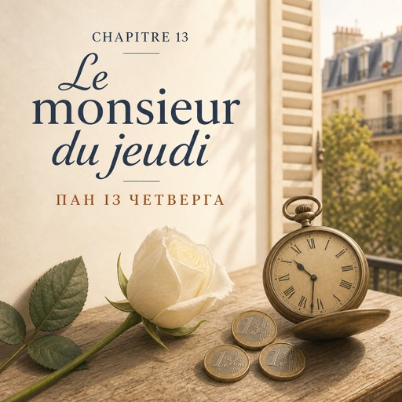

Le jeudi 25 septembre — четвер, 25 вересня
Premier matin froid. L'eau des seaux fume un peu.
Перший холодний ранок. Вода у відрах трохи парує.
Karim écrit les prix sur l'ardoise et souffle dans ses mains.
Карім пише ціни на дошці й дихає собі на руки.
À dix heures, Solange choisit une rose blanche. Elle en regarde trois avant d'en prendre une.
О десятій Соланж вибирає білу троянду. Перебирає три, перш ніж узяти одну.
Elle la pose sur le comptoir. Une seule.
Кладе її на прилавок. Одну-єдину.
— À dix heures et demie, monsieur Vasseur arrive.
— О пів на одинадцяту прийде мсьє Вассер.
— Le monsieur du jeudi. Une rose blanche. Toujours la même chose.
— Пан із четверга. Одна біла троянда. Завжди те саме.
Elle regarde Natalia par-dessus ses lunettes.
Вона дивиться на Наталю поверх окулярів.
— Vous dites bonjour. Vous donnez la rose. Vous ne demandez rien.
— Вітаєтеся. Даєте троянду. Нічого не питаєте.
À dix heures vingt-huit, la porte s'ouvre.
О десятій двадцять вісім двері відчиняються.
Un monsieur de soixante-dix-huit ans. Manteau gris, chapeau, chaussures propres.
Пан сімдесяти восьми років. Сіре пальто, капелюх, чисте взуття.
Il enlève son chapeau en entrant.
Заходячи, він знімає капелюха.
— Bonjour, madame.
— Добрий день, пані.
— Bonjour, monsieur.
— Добрий день, пане.
— Vous êtes nouvelle.
— Ви новенька.
— Oui. Je m'appelle Nathalie.
— Так. Мене звати Наталі.
— Enchanté. Je m'appelle Roger Vasseur.
— Дуже приємно. Мене звати Роже Вассер.
Il parle lentement, avec des phrases entières. Natalia comprend chaque mot.
Він говорить повільно, цілими реченнями. Наталя розуміє кожне слово.
Ça ne lui arrive jamais.
З нею такого не буває ніколи.
— Une rose blanche, s'il vous plaît. Comme d'habitude.
— Одну білу троянду, будь ласка. Як завжди.
La rose est déjà là. Natalia coupe la tige, un centimètre.
Троянда вже тут. Наталя підрізає стебло на сантиметр.
Elle s'arrête. Trois mots, et elle s'arrête.
Вона зупиняється. Три слова — і зупиняється.
— Sans papier, merci.
— Без паперу, дякую.
— ... Bien sûr.
— …Звісно.
La semaine dernière, Karim lui a appris le papier, le ruban, le nœud.
Минулого тижня Карім навчив її паперу, стрічки, вузла.
Aujourd'hui, la leçon est plus courte : rien.
Сьогоднішній урок коротший: нічого.
Il donne trois euros. La monnaie exacte, préparée avant d'entrer.
Він дає три євро. Без решти, приготовані ще до того, як зайшов.
— Merci, madame. À jeudi prochain.
— Дякую, пані. До четверга.
— Au revoir, monsieur Vasseur. Bonne journée.
— До побачення, мсьє Вассере. Гарного дня.
Il remet son chapeau dehors, jamais avant.
Капелюха він надягає вже надворі, ніколи раніше.
Dans la rue, il porte la rose la tête en bas, comme un parapluie fermé.
На вулиці він несе троянду голівкою вниз, як згорнуту парасольку.
La porte se ferme.
Двері зачиняються.
Karim, derrière la caisse :
Карім із-за каси:
— Onze ans.
— Одинадцять років.
— Onze ans ?
— Одинадцять років?
— Tous les jeudis. Dix heures et demie. Une rose blanche. Depuis onze ans.
— Щочетверга. Пів на одинадцяту. Одна біла троянда. Уже одинадцять років.
— Personne ne sait. J'ai demandé une fois.
— Ніхто не знає. Я одного разу спитав.
— Il a souri. Il n'a pas répondu. Je n'ai plus demandé.
— Він усміхнувся. Не відповів. Більше я не питав.
Solange sort de l'atelier avec un seau.
Із майстерні виходить Соланж із відром.
— Vous avez commencé une question.
— Ви почали питання.
— Et vous avez arrêté. Vous avez bien fait.
— І зупинилися. Правильно зробили.
— Mais je ne comprends pas.
— Але я не розумію.
— Ce n'est pas notre travail de comprendre. Les gens racontent quand ils veulent.
— Розуміти — не наша робота. Люди розповідають, коли захочуть.
Un jour, il racontera. Ou non.
Колись він розкаже. Або ні.
L'après-midi, il pleut. Il y a peu de clients.
По обіді йде дощ. Клієнтів мало.
Natalia change l'eau, coupe les tiges, balaie deux fois.
Наталя міняє воду, підрізає стебла, підмітає двічі.
Elle pense au monsieur du jeudi. Souvent.
Вона думає про пана з четверга. Часто.
Le soir, dans le métro, elle ouvre son carnet.
Увечері в метро вона розгортає блокнот.
Elle n'écrit pas un mot nouveau. Elle écrit : *jeudi, dix heures et demie*.
Вона не записує нового слова. Вона пише: *четвер, пів на одинадцяту*.
Ce n'est pas du vocabulaire.
Це не лексика.